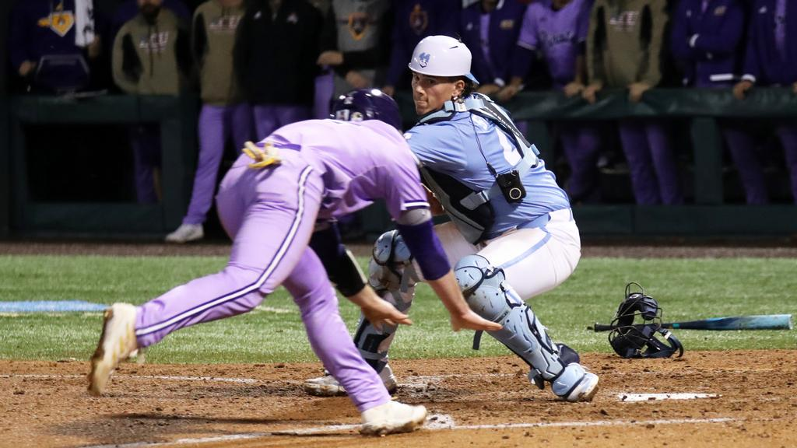
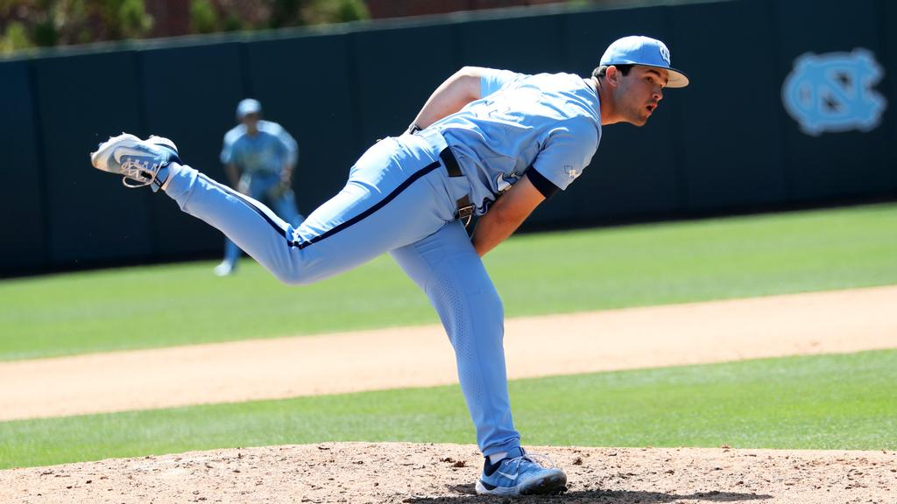

What We Look For
 Baseball Knowledge
Having some experience with baseball concepts helps us get the most out of our data. "Baseball knowledge" includes things like having played baseball/softball, watching baseball/softball regularly, reading articles on baseball/softball analytics, etc.
Technical Skills
Many of our analysts start out with backgrounds in statistics or computer science, but many do not. This role is an opportunity to learn new skills and to apply them in a real-life setting, so having a bunch of coding experience is not necessarily a prerequisite. Some skills that help us do our jobs include coding in R/Python, knowledge of modeling and visualization, experience with web design, and experience with biomechanical data.
Communication
Being able to communicate our work effectively is critical to making an impact on the field. If you can summarize information effectively and can explain the "why" and "how" of a complicated idea, that is a huge plus.
Enthusiasm
People who succeed in this role are excited about helping the Carolina Baseball program. Not everything you will do as an analyst will necessarily be "fun," but if you are enthusiastic about helping the team succeed, you will get the most out of this opportunity.